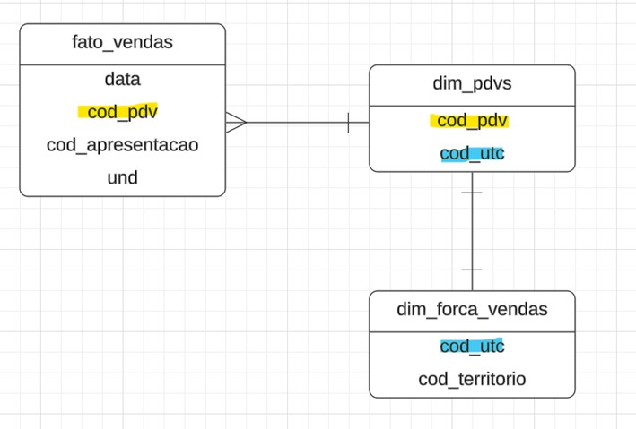
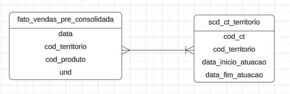
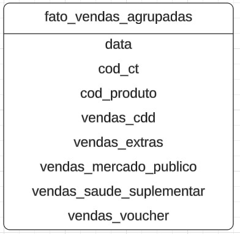

Fonte de Dados
Tabelas Necessárias (Diretamente)
1. Fato Vendas
Colunas:
- Data da Venda
- Código do Consultor Técnico (cod_ct)
- Código do Produto (cod_produto)
- Unidades Vendidas
2. Fato Meta
Colunas:
- Data (Mês da Meta)
- Código do Consultor Técnico (cod_ct)
- Código do Produto (cod_produto)
- Unidades Meta
3. Dimensão CT
Colunas:
- Código do Consultor Técnico (cod_ct)
- Nome do Consultor Técnico (nome_ct)
- Data de Admissão
- Data de Demissão
4. Dimensão GR
Colunas:
- Código do Gerente Regional (cod_gr)
- Nome do Gerente Regional (nome_gr)
- Data de Admissão
- Data de Demissão
5. SCD (Slow Changing Dimension) Nível do CT
Colunas:
- Código do Consultor Técnico (cod_ct)
- Nível
- Data de Início do Nível (data_inicio_nivel)
- Data de Fim do Nível (data_fim_nivel)
6. SCD (Slow Changing Dimension) Nível do GR
Colunas:
- Código do Gerente Regional (cod_gr)
- Nível
- Data de Início do Nível (data_inicio_nivel)
- Data de Fim do Nível (data_fim_nivel)
7. SCD Bônus CT
Colunas:
- Data (Mês de Vigência dos Valores)
- Nível
- Bônus Meta 1
- Bônus Meta 2
- Bônus Meta 3
8. SCD Bônus GR
Colunas:
- Data (Mês de Vigência dos Valores)
- Nível
- Bônus Meta 1
- Bônus Meta 2
- Bônus Meta 3
Tabelas Necessárias (Indiretamente)
1. SCD CT Território
Colunas:
- Código do Consultor Técnico (cod_ct)
- Código do Território (cod_territorio)
- Código do Gerente Regional (cod_gr)
- Data de Início da Atuação no Território (data_inicio_atuacao_territorio)
- Data de Fim da Atuação no Território (data_fim_atuacao_territorio)
Obtenção da Tabela de Vendas Consolidada
Objetivo
Consolidar todas as vendas em uma única tabela unificada, contendo dados de múltiplas fontes, com as seguintes colunas principais:
- Data da Venda
- Código do Consultor Técnico (cod_ct)
- Código do Produto (cod_produto)
- Unidades Vendidas
Fontes de Dados
- Vendas CDD
- Vendas Extras
- Vendas Mercado Público e Saúde Suplementar
- Vendas Vouchers (considerando apenas vendas com desconto acima de 99%)
1º Passo – Padronização de cada tabela de vendas
Neste passo, foi realizado um processo de padronização em cada uma das tabelas de vendas (CDD, Extras, Acesso e Vouchers) com o objetivo de gerar a coluna cod_territorio. Essa coluna é essencial para determinar o CT responsável por cada venda.

Observações Importantes:
- Tabela de Vendas CDD
- Foram excluídas as vendas do canal HOSPITALAR.
-
Também foram removidas as vendas cujos informantes pertencem às categorias DIMED, LS e PORTAL.
-
Tabela de Vendas VOUCHER
- Foram mantidas apenas as vendas que apresentam desconto superior a 70%.
- Para vouchers de 99.99%, descontamos 1 voucher por uma venda.
- Para vouchers entre 70% e 80%, descontamos 2 vendas a cada 3 vouchers, ou seja, 1 voucher de 70% equivale a 2/3 de uma venda.
Resultado Final
Ao final deste passo, cada tabela foi ajustada para conter apenas os dados relevantes, resultando na seguinte estrutura padrão:
2º Passo: Atribuição do CÓDIGO CT às Vendas
No passo anterior, foram geradas quatro tabelas (CDD, Extras, Acesso e Vouchers) no formato da fato_vendas_pre_consolidada.
Neste passo, o objetivo é atribuir a coluna cod_ct, garantindo que as vendas sejam computadas corretamente para o Consultor Técnico (CT) responsável, mesmo que o cod_territorio tenha mudado de CT ao longo do tempo. Essa abordagem é necessária para refletir as mudanças históricas de alocação dos territórios.
Para atingir esse objetivo, utilizamos um LEFT JOIN entre a tabela fato_vendas_pre_consolidada e a dimensão dim_ct_territorio. Essa ligação é feita considerando tanto o cod_territorio quanto o intervalo de datas:
- O
cod_territorioda tabela fato é comparado com o da dimensão. - A data da venda é verificada para estar entre
data_inicio_atuacaoedata_fim_atuacao(ou a data atual, caso a saída não esteja definida).

Resultado Final
Ao final deste passo, cada tabela foi ajustada para conter apenas os dados relevantes, resultando na seguinte estrutura padrão:
3º Passo: Agrupamento das vendas por data e Concatenação das tabelas
Por fim, cada tabela fato foi agrupada por data, cod_ct e cod_produto, obtendo a soma das vendas. Em seguida, foram criadas as colunas Nível e Tempo de Empresa, referentes ao nível de tempo de empresa do CT no período filtrado.

Por que foi necessário esse último passo?
Foi uma solução que eu encontrei para conseguir estabelecer um link entre o CT e a dimensão calendário.